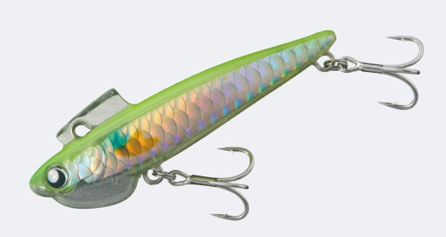
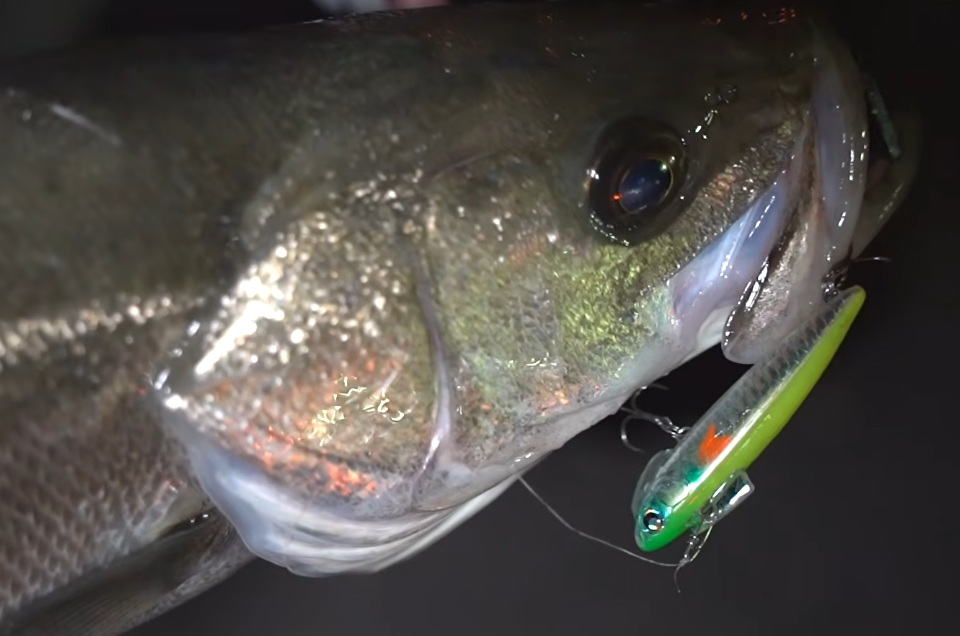
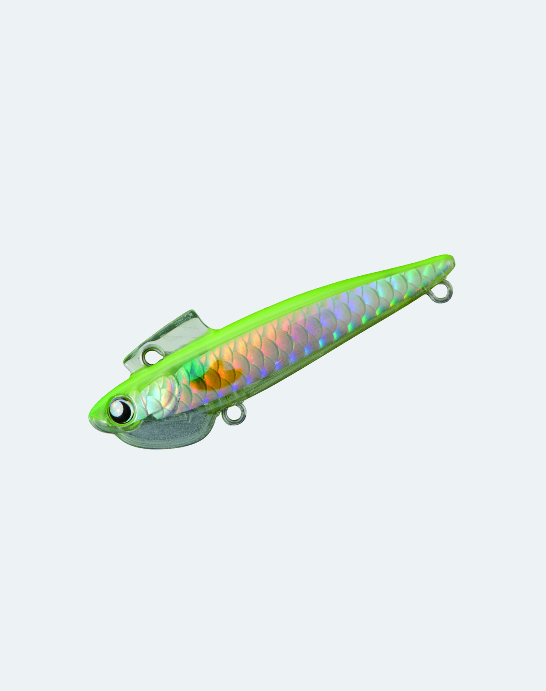
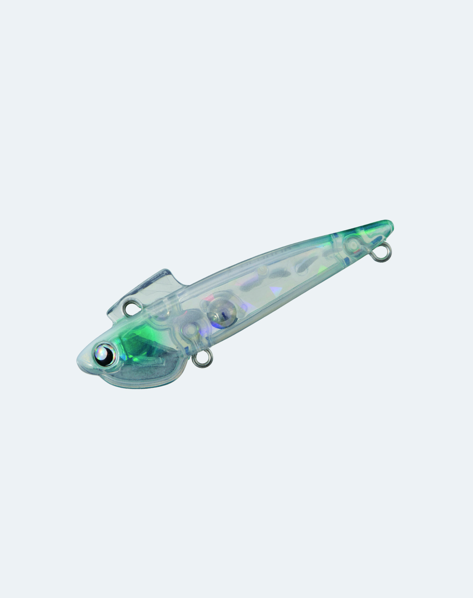
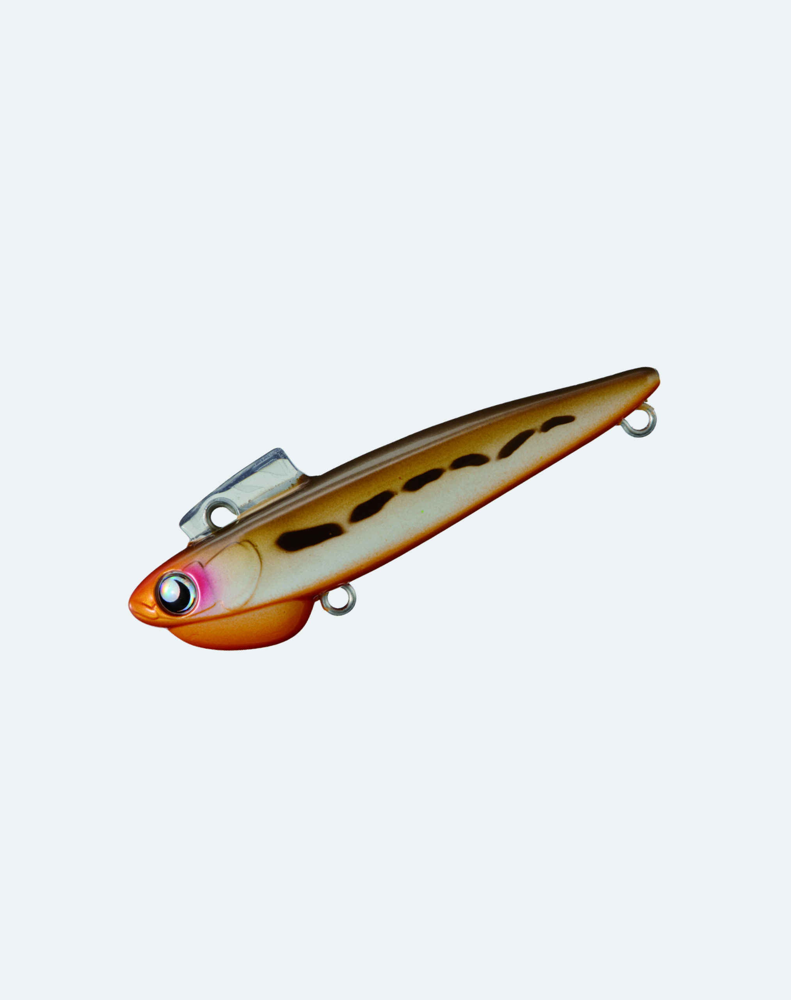
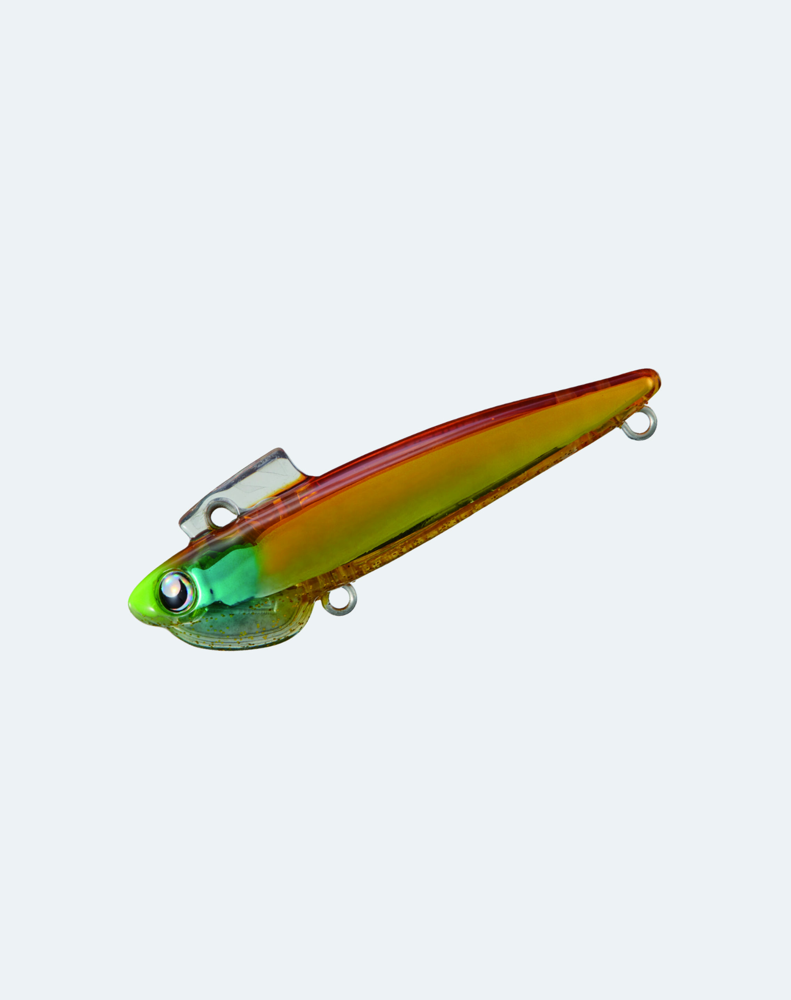

Cocon68S
Cocon68SはGOTO9のシンキングシンキングペンシルです。
身近な人工地形を遊び尽くす【３Cコンセプト】

スペック
- メーカー
- GOTO9
- 長さ
- 68 mm
- 重さ
- 13 g
- フック
- #8×2
- リング
- #2
- レンジ
- 60cm-
- タイプ
- シンキングペンシル
- 沈下タイプ
- シンキング
- アクション
- テールフリップアクション
- ターゲット
- シーバス
- 価格
- 1815円(税込)
- 発売日
- 2026-04-15
- 開発者
- 新拓也
ココン68sの特徴
都会でのアーバンフィッシングの切り札
シンペンでもない、シャッドでもないそんな新型ルアーの特徴を解説。
-
小刻みなテールフリップアクション
特殊なリップ構造のCocon-Lip（ココンリップ）によりテールフリップアクションを発生させる。
デッドスローからハイスピードまで対応し、特にデッドスローでの動き出しとアクションは秀逸。ピンスポットも丁寧に探る事が可能です。 -
抜群のレンジコントロール性能
カウントダウンとリトリーブスピードの組み合わせにより、ミドル～ボトムの一定レンジをトレースできる。
デッドスローでも適度な引き感を感じながらリトリーブができます。
浮き上がりを抑えているため、レンジをコントロールしやすい設計に！。 -
アクションが破綻しない
低速から高速までしっかりとアクションを継続できます。
足元までがバイトチャンス。意外と逃しがちなピックアップ直前まで狙えるルアーです。
ココン68sの使い方・得意な状況
基本的な使い方は着水後カウントダウンしてから引きたいレンジをスローリトリーブします。
シンペンでは浮き上がってくるような場所でもレンジコントロール能力が高く、魚のいる層を引いてこれます。
得意な状況は足場の高い都市型の小規模河川など。暗の中からゆっくり引いてくるとバイトを誘えます。
低活性時やボトムについている場合に有効で、ゆっくり巻いてもボトムキープが簡単です。
ワンポイント
ボトムドリフトが一番有効な釣法です。
シンペンでは流れを受けて浮き上がってしまうようなシチュエーションでも、ボトムを漂わせることができます。
また、レンジは60㎝以深で使用することで、足元までバイトチャンスがあるので、ゆっくりピックアップまで油断せずに誘いましょう。

画像出典:GOTO9公式YOUTUBE
人気カラー

イナッコチャートココンの代表でプロトカラー。実績抜群でナイトで視認性の良いカラー。

シェルフィッシュクリアなカラーはマイクロベイトパターンにドンピシャ。使いやすさNo.1

ボトムパーティーココンはボトム狙いに最適で、ハゼに似せたカラーとの相性は抜群。ボトムドリフト勢はこれ一択。

メープルトーンバチや甲殻類にも見えるカラー。万能カラーなので、一本持っておきたい人はこれ。
画像出典:GOTO9公式HP
ココン68sに似ているルアー
ココンは新コンセプトで現在は似たルアーがありません。
そのほかルアーをお探しの方はこちらをどうぞ⇒ほかのルアーを探す